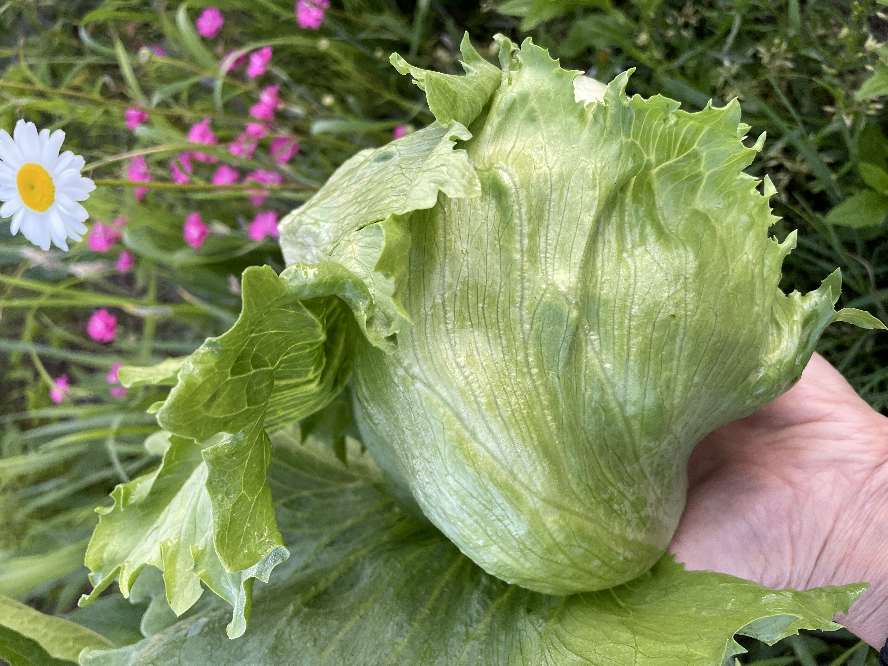

販売終了しました
申し訳ありませんが、現在キヌサヤエンドウの販売は終了しました。
他のおいしい野菜や商品をご覧いただけますので、ぜひご検討ください。
レタス
レタスは、さっぱりとした味わいが特徴の野菜です。当店のレタスは新鮮でシャキシャキとした食感があります。サラダやサンドイッチ、炒め物など、さまざまな料理に活用できる野菜です。
特性
- シャキシャキとした食感
- さっぱりとした味わい
- 栄養素を豊富に含む
野菜の苗植え・収穫時期
レタスの苗植えは春から夏にかけて行われます。収穫時期は苗植えから約1か月後の夏から秋にかけてです。気候や品種によっても収穫時期は異なる場合がありますので、詳細な時期は専門の農業資料などをご参考にしてください。
レタスの写真

採れた日付: 2023年6月2日